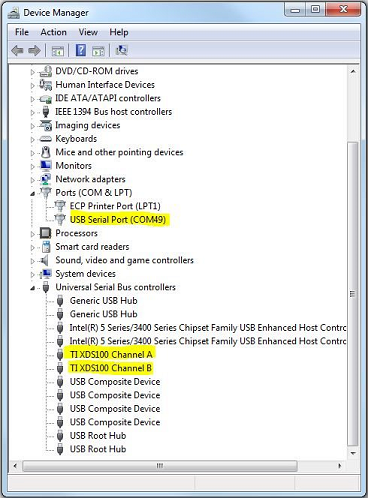
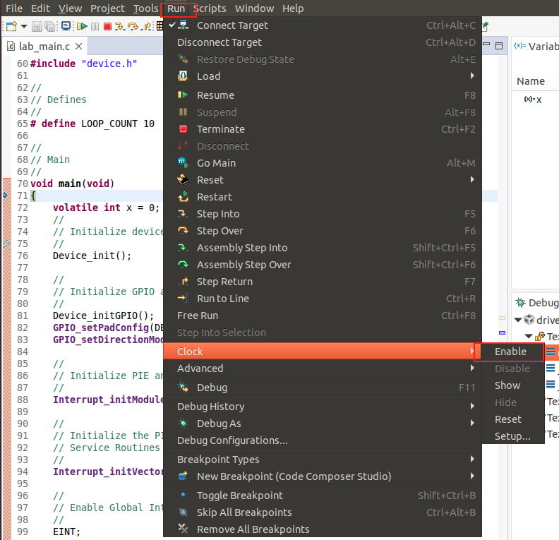
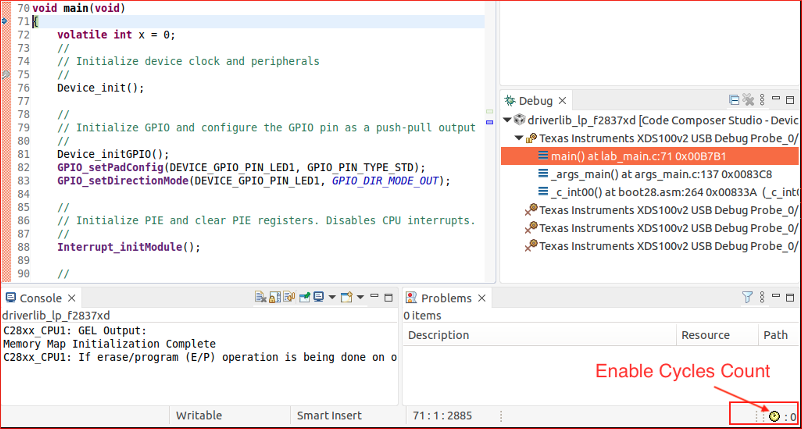
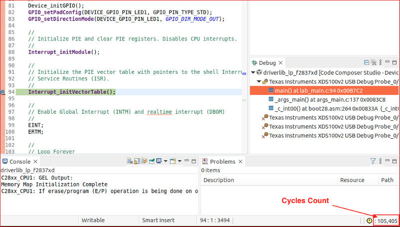

Debug Tips & Tricks#
This module describes various topics related to debugging issues on the C2000 family of devices. Select the topic from the navigation pane on the right-side of the page.
JTAG Connectivity#
Device enumerated properly#
For the JTAG debug probe to communicate with the PC, the driver files need to be installed. This typically occurs co-incident to the installation of Code Composer Studio (CCS). To verify that the drivers are successfully installed, connect the PC to the JTAG debug probe and power up. Then go to Windows Device Manager and locate the associated debug probe as shown below.

Install FTDI device driver#
If debug probe is not showing up in the host PC/MAC system, download and install FTDI Driver. Typically this occurs with the installation of CCS.
Update TI Emulation Software#
Update TI Code Composer Emulation driver to the latest version. It can be done either going to CCS menu Help→Check for Updates or by downloading and installing TI XDS Emulation Software (EMUPack) manually.
Debug probe#
If you are using a TI EVM, then you can use an onboard debug probe or external debug probe.
Launchpad : C2000 Launchpads have an xds100v2 or xds110 debug probe. Make sure you are using the correct debug probe in the active target configuration file. Some of the launchpads (F280025C, F280049C, F280039C) use cJTAG mode in 2-pin advanced mode. Check the target configuration file to match the setting with what is available on the board. Refer to the Launchpad’s user guide for detailed information
controlCARD : C2000 controlCARDs have an onboard xds100v2 or xds110 debug probe. controlCARD also supports external debug probe - xds110, xds200, xds560v2. If you are using external debug probe then make sure the switch for debug probe on controlCARD are set appropriately.
Custom Board : If you are using a custom board with an external debug probe, then make sure debug probe selected in the target configuration file is the correct one. Based on drive strength of the board, you may need to adjust the JTAG clock. Refer to video on Experimenting with JTAG Clock Speed.
Useful Links for Debugging JTAG Connectivity:#
Compiling and Building the application#
Linker Error - Program does not fit#
As the scope of projects increase, and more code/variables are added to the project, the developer may encounter a linker error that the program does not fit into memory. Here are the steps to identify and resolve.
Review the console output
Identify the section which is not fitting in the supplied memory section
Check which memory section has spare memory space and can be used
Split the problematic section to multiple memory sections. The syntax to split the section to multiple memory sections is explained in TI Linker Command File Primer page.
ADC debugging#
Clocks#
Symptoms
ADCCLK too slow: Sampled waveform is different than expected (due to reduced sample rate)
ADCCLK too fast: Distortion, linearity, and/or gain errors.
Note that the ADC can sometimes perform surprisingly well under nominal conditions with higher ADCCLK (say 100MHz instead of expected 50MHz) so the results may be more subtle than expected.
SYSCLK too fast: Various strange behavior. Device can be unreliable or give unexpected digital results. S+H could be too short since it is clocked from SYSCLK. Can result in ADCCLK too fast (see above)
Debug Actions
Verify SYSCLK via XCLKOUT
Some Launchpads don’t have correct GPIO for XCLKOUT; have used simple ePWM code in the past, but note that ePWM timebase has lots of potential dividers to account for.
Verify ADCCLK via examining PRESCALE setting
Verify the ADC sample rate directly by adding a large series resistor (say 10kohm) and then using a scope to examine the kick-back from each sample
Debug enhancement for future: Add ADCCLK observability to XCLKOUT
Reference#
Symptoms
Floating reference in external reference mode: Max-scale or zero-scale conversions or just erratic/unexpected conversion results
No reference in internal reference mode: Same as above. Can occur if reference pins are ganged (say ADCA + ADCC) but customer only configures the reference that is disabled (need to configure both even if only using one of the ganged ADCs)
Driving a voltage on VREFHI while also configuring for internal reference mode: Contention will shift ref voltage and reduce accuracy and cause distortion
Inaccurate reference voltage: inaccurate conversion results (possible cause if in internal reference mode is missing/corrupt bandgap trim)
Using VDDA as a reference: Noisy results, low accuracy
Unstable reference driver: Very noisy results or very inaccurate conversions
This can occur if the reference driver can’t handle the load capacitance or if the customer selects an uncompensated (not unity gain stable) op-amp, but then uses it as a voltage-follower.
Debug Actions
Verify voltage on VREFHI pins (both presence and accuracy) using DMM
Note 3.3V range internal reference will output 1.65V to the pin
Verify that driver is adequate (in external reference mode) and external capacitor (should be uF range) is present and placed close to device
Use TI Training : Driving the reference input on a SAR ADC to design reference. It should be using high bandwidth op-amp
Note that op-amp stability / phase margin is critical and should be verified with SPICE simulation
Verify no pin oscillations with oscilloscope
Verify reference mode (internal / external) and range in internal reference mode (2.5V or 3.3V) in SW / expressions window
Note: all ganged together ADCs may need to be configured even if not all ADCs are used (only one reference is not disabled by OTP loading into device configs)
Verify bandgap trim is populated in expressions window
Input Design#
Symptoms
Poor ADC driver settling (S+H too short and/or driver impedance too high and/or op-amp bandwidth too low): “memory cross-talk” (refer to Application Report : ADC Input Circuit Evaluation for C2000 MCUs), distorted signal, poor accuracy (particularly gain error), and/or erratic conversion results.
For near-minium S+H time, customer needs to be in the ballpark of op-amp with ~10MHz BW, series R of 10’s of ohms, and C on ADC pin of 100’s of pF
Many issues arise from customer using voltage divider with high effective source impedance (R equivalent = R1 || R2) without an op-amp buffer
Sampling too fast for charge-sharing input (refer to Application Report : Charge-Sharing Driving Circuits for C2000 ADCs): Issues with signal distortion or gain error, sampled value depends on sample rate, oversampling makes results less accurate.
For a charge-sharing input, the same rate is generally going to be closer to 10’s of kHz or less vs. high-speed sampling in the 100s of kHz
Debug Actions
Analyze signal conditioning circuits to ensure appropriate settling.
Quick check: “Choosing an acquisition window duration” formulas from TRM
Better: Use following application reports to simulate input:
For charge sharing inputs (inputs with a large capacitor) it may be worth getting the customer to measure the inrush current into the ADC pin (due to repeated charging of the S+H capacitor) to help them understand that the input is not high-impedance, but actually a switched-capacitor circuit.
Also worth noting that high-speed sampling will result in an inrush current on the ADC pin that will be larger than the pin leakage specification. This is expected and not indicative of a damaged ADC or the device not meeting the DS leakage spec’.
Over/Under Voltage on Input#
Symptoms
Input damaged by EOS: Reading stuck (at 0 or full-scale or some random code) on particular input, or full ADC does not operate
One input experiencing over-or-under voltage while other inputs are converting: inaccurate or stuck-at readings, or cross-talk similar to “Memory cross-talk” (but note cause is not the same as memory cross-talk)
Note: cross-talk or disturbance effect will be much greater if the over or under voltage is sampled
Debug Actions
For pins suspected to be damaged by EOS, use a source meter (or a DMM + stimulus source) to measure the input/output current on the pin while the ADC is not converting. Pins damaged by EOS (or ESD) will exhibit large leakage currents.
Note: if the ADC is converting at a high sample rate the input may experience an in-rush current much larger than the specified pin leakage. This is normal/expected operation and not indicative of damage (or the device not meeting DS) so perform the leakage test while the ADC is not converting.
For strange / unexplained issues, asking the customer to confirm that other adc inputs are not exceeding VSSA to VDDA range can be a good question
Application Report : Electrical overstress on data converters is a good resource and also explains some strategies for protecting the ADC inputs from damage
ADC Evaluation#
Symptoms
Using battery as signal source: poor DC code spread, lots of low-frequency noise, and other issues due to signal impedance since a batter has very low bandwidth (see “Input Design” above)
Using a potentiometer to generate DC voltage for testing: Lots of issues due to high impedance (see “Input Design” above)
Note: sampling slow and using a large capacitor “Charge-sharing” input design can work, see Application Report : Charge-Sharing Driving Circuits for C2000 ADCs
Poor cabling (long cables and/or unshielded cables with no or poor return path): noisy results and distorted results due to high effective input impedance (see “Input Design” above)
Leaving DMMs and/or scope probes connected during ADC testing can be a source of noise coupling into the ADC input
Using an inappropriate or uncalibrated instrument to check ADC: poor noise and/or accuracy
Oscilloscopes do not have good accuracy for checking DC voltages
Common to see DAC on something like “Analog Discovery” board used as reference, but this has worse accuracy and resolution than C2000 ADC
Cheap signal generators may only be 12-bit resolution
Poor ADC performance on launchpad
Launchpad does not have cap. footprints on the ADC inputs (and no shielded connections with ground-return connection like SMA/BNC) so getting good performance can be challenging
Poor ADC performance on ControlCard
ControlCard does have ADC input R-C footprints and should generally be possible to get OK performance, but may need to do some significant work to build signal conditioning circuits in the protoboard area and to clean-up ground paths (see ControlCard Analog Testing).
Debug Actions
Check that an appropriate source is being used for ADC evaluation
For AC testing: PSIEVM or instrument like Stanford research DS360 or Audio Precision 27xx
For DC testing: function generator or DAC (check accuracy specifications) or PSI-EVM
Check quality of cabling: use shielded cables or twisted cables where possible. Ensure good ground return path. Buffer locally on PCB if high speed or short S+H sampling is needed.
Check if oscilloscope is being used as baseline for ADC DC readings (vertical resolution usually only ~8-10 bits and accuracy usually in the 10’s of mV / several % error)
Layout#
Symptoms
Noisy results, poor DC codespread, or random spikes in the ADC output: This can be caused by poor layout of the ADC channels, VREFHI/LO, or analog power
Debug Actions
Layout review
Analog signals and signal conditioning circuits are physically separated from noisy circuits like comms, external memory, and power stage as much as possible
Signals have good return paths
Should have adjacent ground or power plane or adjacent routed ground return trace
Includes analog signals like ADC inputs and VREFH/LO but also digital signals that could be noise generators
Split in the ground plane can result in extremely bad return path if a critical signal is routed across the split
Capacitor(s) for VREFHI/LO is SMT and placed close to the pins
Appropriate PCB stackup
Profiling application#
There are a number of different ways to measure performance of devices. C2000 family of devices provide a quick and easy way to count cycles. The profile clock uses silicon resources to count CPU cycles between two breakpoints.
Setup and Read Cycle Count#
Set the breakpoints at beginning of the function and at the end of the function.
Enable profile clock using CCS menu Run → Clock → Enable as shown in the image below

Run to first breakpoint of the code
Clear the CPU cycles count by double-clicking the
clockicon as shown in the image below Run to the second breakpoint, and read the cycles count 
Feedback
Please provide any feedback you may have about the content within C2000 Academy to: c2000_academy_feedback@list.ti.com